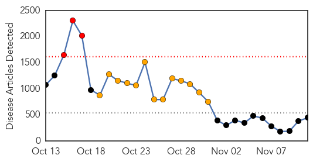
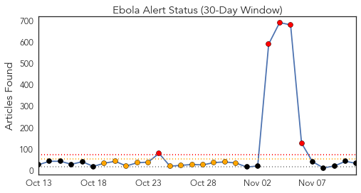
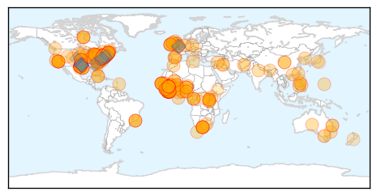
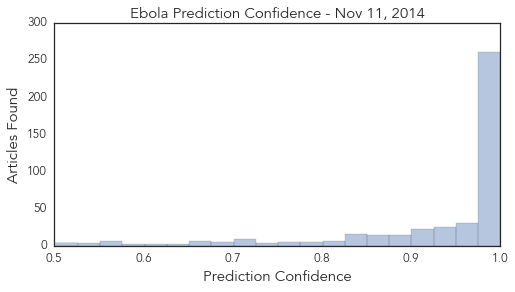

Mumps
30-Day Web Trend
4 alerts, 0 warnings

30-Day Twitter Trend
0 alerts, 0 warnings

Article Locations

Article Confidences

Top Articles:
-
No articles found for Nov 11, 2014
Top Tweets:
-
No tweets found for Nov 11, 2014
Ebola
30-Day Web Trend
3 alerts, 13 warnings

30-Day Twitter Trend
1 alerts, 4 warnings

Article Locations
Article Confidences
Top Articles:
- 1.000
- N.Y. doctor, free of Ebola, discharged from hospital
- 1.000
- N.Y. doctor, free of Ebola, discharged from hospital
- 1.000
- Ebola: Dramatic drop in Liberia, Mali prepares to lift quarantine restrictions
- 1.000
- Ebola in Sierra Leone: 50 deaths reported in Koinadugu since mid-October
- 1.000
- First Ebola Case NYC
- 1.000
- US Now Free of All Known Ebola Cases
- 1.000
- Texas nurse Nina Pham cured of Ebola
- 1.000
- Erecting medical defenses against Ebola
- 1.000
- Worst Ebola outbreak on record tests global response
- 1.000
- UM Health System, nurses union agree to Ebola contract
- 1.000
- MSF: Ebola rapid teams needed for Liberian hot spots
- 1.000
- US doctor declared cured of Ebola: health officials
- 1.000
- N.Y. doctor to be released after Ebola recovery; US opens new unit in Liberia
- 1.000
- Ebola May Kill 1 in 7 Pregnant Women in West Africa
- 1.000
- U.S. Ebola experience changes thinking about disease
- 1.000
- America's success against Ebola shows disease 'eminently treatable'
- 1.000
- There Are Now Zero Cases Of Ebola In The United States
- 1.000
- America all clear of Ebola — for now
- 1.000
- iafrica.com NY doctor cured of Ebola
- 1.000
- CHRONOLOGY-Worst Ebola outbreak on record tests global response
- 1.000
- Dr. Craig Spencer, Ebola free, showered with applause
- 1.000
- CHRONOLOGY-Worst Ebola outbreak on record tests global response
- 0.999
- Last US Ebola patient cured, released from hospital
- 0.999
- N.Y. doctor, free of Ebola, discharged from hospital
- 0.999
- Ebola fight to be a top topic for Congress
- 0.999
- Beaming NY Doctor Walks out of Hospital Free of Ebola
- 0.999
- 'Epidemic of fear' has driven Ebola debate, experts say
- 0.999
- Engineering a response to Ebola
- 0.999
- Ebola crisis: New York doctor Craig Spencer cured of virus and due to be discharged, officials say
- 0.999
- NYC Doctor Now Ebola-Free, May Be Discharged Tuesday From Hospital
- 0.999
- WHO declares Uganda Marburg-free
- 0.999
- Another Sierra Leonean doctor infected with Ebola
- 0.999
- Uganda says free of Ebola-like Marburg after outbreak in September
- 0.999
- Many women risk dying in childbirth in Ebola-hit countries
- 0.999
- New York doctor now free of Ebola discharged from hospital
- 0.999
- Free of Ebola, NY doctor and WSU grad Craig Spencer leaves hospital
- 0.999
- American Who Contracted Ebola in Africa to be Treated in MD
- 0.999
- Another Sierra Leonean doctor infected with Ebola
- 0.999
- Liberia, Mali see crucial gains in Ebola battle – signs virus is waning, says WHO
- 0.999
- Last US Ebola patient Craig Spencer declared free of virus, will leave hospital
- 0.999
- Another doctor infected with Ebola
- 0.999
- Ebola crisis: Mali confirms second death
- 0.999
- Ebola cases declining in Liberia, rising in Sierra Leone 11/11/2014
- 0.999
- Doctor who had Ebola leaves New York City hospital
- 0.999
- Surgery in the time of Ebola
- 0.999
- NYC Doctor Cured of Ebola ‘Very Proud’ of Doctors Without Borders Work in West Africa
- 0.999
- U.S. doctor free of Ebola — turn focus back to West Africa
- 0.999
- N.Y. doctor, free of Ebola, discharged from hospital > KAGS TV
- 0.999
- NY doctor free of Ebola virus, to be released from hospital
- 0.999
- Unicef Ebola expert Dr Peter Salama does Reddit Q&A
Showing top 50 articles...
Top Tweets:
- 0.855
- RT: People can’t spread Ebola if they aren’t sick. Only way to get Ebola is direct contact w/ body fluids of a person w/ symptom…
- 0.855
- RT: People can’t spread Ebola if they aren’t sick. Only way to get Ebola is direct contact w/ body fluids of a person w/ symptom…
- 0.812
- Public health management of persons having had contact with Ebola virus disease cases in the EU http://t.co/QOZHDCMsGp
- 0.761
- RT: Now I'm convinced Sierra Leone is losing the Ebola fight if not already. This is why: Monday 10 November - Usman... http:/…
- 0.759
- expert panel is assessing all available data for potential agents to try in ebola virus disease. Wise to follow their recommendations.
- 0.720
- RT: Mali suffers new Ebola case with death of a nurse: Bamako (AFP) - Mali has suffered a new case of Ebola ... http://t.c…
- 0.688
- Amiodarone would NOT be in my shortlist of investigational agents to try in ebola virus disease. Groups should refer to shortlist.
- 0.626
- Ebola Today: Lara Logan Quarantined after '60 Minutes' Ebola Report. http://t.co/6BsrEMRpBO
- 0.626
- Ebola Today: Lara Logan Quarantined after '60 Minutes' Ebola Report http://t.co/yQTkCKJlle
- 0.589
- Governments groups striving to become as agile as the Ebola virus. http://t.co/RHm8dIEJSX
- 0.578
- Ebola watch: Outbreak still growing in Sierra Leone. http://t.co/ThdpL1BVYN
- 0.570
- Ebola Outbreak West Africa: FAO Regional Response Programme (October 2014 – September 2015) @FAOemergencies http://t.co/gJRj3ORXOO
- 0.564
- Ebola Today: 21 Days Later Nurse in Maine Officially Ebola-Free http://t.co/a49qYowECY
- 0.561
- Ebola treatment center opens; Ebola threatens food security in Liberia. HealthSecurity http://t.co/H1JhGDbj22
- 0.544
- SierraLeone. Ebola cases in Sierra Leone show sharp rise ebolaresponse http://t.co/Qc2h5qi0KN
- 0.544
- Nurse Will Pooley – back treating Ebola patients in Sierra Leone. http://t.co/FVAk1tOBRa
- 0.543
- Hi -- do you have thoughts about the new federal Ebola quarantine rules? Would like to interview you.
- 0.503
- Ebola Today: Outbreak May Kill 1 in 7 Pregnant Women in West Africa. http://t.co/FMqwDBMGLe